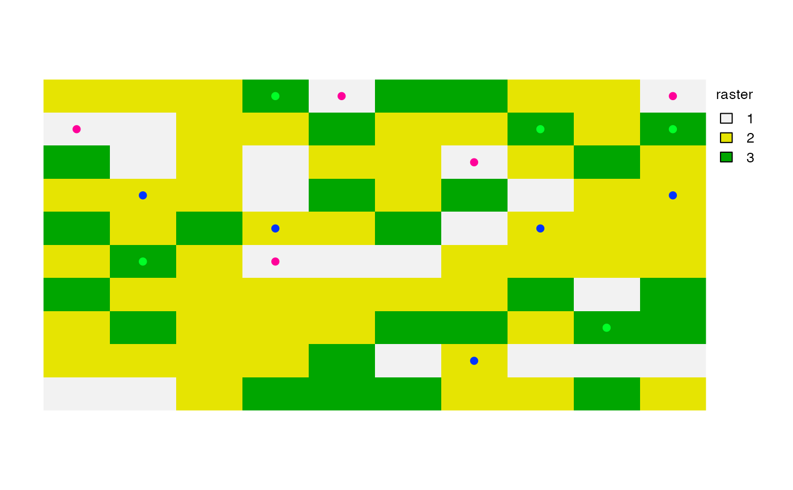
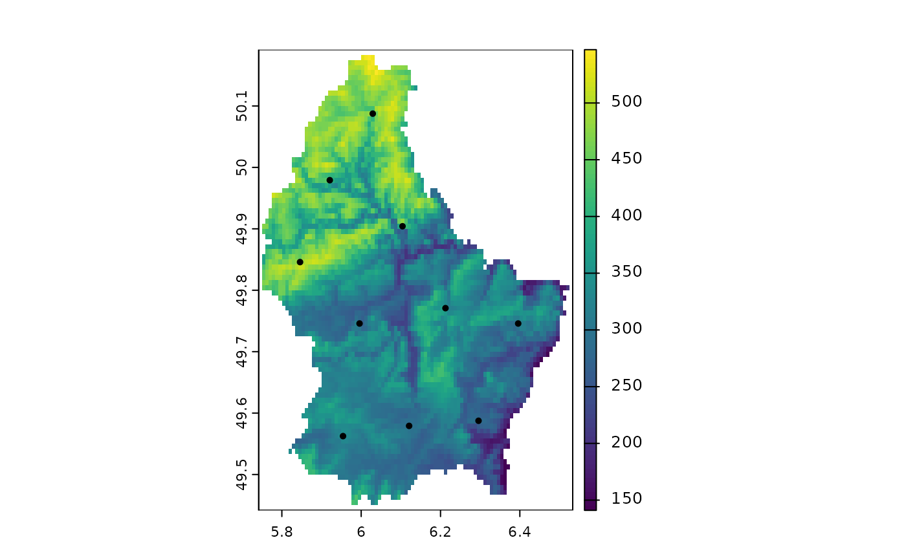

sample.RdTake a spatial sample from a SpatRaster, SpatVector or SpatExtent. Sampling a SpatVector or SpatExtent always returns a SpatVector of points.
With a SpatRaster, you can get cell values, cell numbers (cells=TRUE), coordinates (xy=TRUE) or (when method="regular" and as.raster=TRUE) get a new SpatRaster with the same extent, but fewer cells.
In order to assure regularity when requesting a regular sample, the number of cells or points returned may not be exactly the same as the size requested unless you use exact=TRUE (and do not use na.rm=TRUE). Alternatively, use method="spread" to get an approximately regular sample for the cells that are not NA.
# S4 method for class 'SpatRaster'
spatSample(x, size, method="random", replace=FALSE, na.rm=FALSE,
as.raster=FALSE, as.df=TRUE, as.points=FALSE, as.mask=FALSE, values=hasValues(x),
cells=FALSE, xy=FALSE, ext=NULL, warn=TRUE, weights=NULL, exp=5, exhaustive=FALSE,
exact=FALSE, each=TRUE, ...)
# S4 method for class 'SpatVector'
spatSample(x, size, method="random", strata=NULL, chess="")
# S4 method for class 'SpatExtent'
spatSample(x, size, method="random", lonlat, as.points=FALSE, exact=FALSE)SpatRaster, SpatVector or SpatExtent
numeric. The sample size. If x is a SpatVector, you can also provide a vector of the same length as x in which case sampling is done separately for each geometry. If x is a SpatRaster, and you are using method="regular" you can specify the size as two numbers (number of rows and columns). Note that when using method="stratified", the sample size is returned for each stratum
character. Should be one of "regular", "random", or, if x is a SpatRaster, "stratified" (each value in x is a stratum), "weights" (each value in x is a probability weight), or "spread" (an approximately regular sample, using compact zones generated with k_means clustering of the raster cell locations)
logical. If TRUE, sampling is with replacement (if method="random")
logical. If TRUE, NAs are removed. Not used with method="spread" or as.raster=TRUE
logical. If TRUE, a SpatRaster is returned
logical. If TRUE, a data.frame is returned instead of a matrix
logical. If TRUE, a SpatVector of points is returned
logical. If TRUE x is returned, with its values "masked" by the sample. That is, only cells that are included in the sample retain their values
logical. If TRUE raster cell values are returned
logical. If TRUE, cell numbers are returned. If method="stratified" this is always set to TRUE if xy=FALSE
logical. If TRUE, cell coordinates are returned
SpatExtent or NULL to restrict sampling to a subset of the area of x
logical. Give a warning if the sample size returned is smaller than requested
SpatRaster. Used to provide weights when method="stratified"
logical. If TRUE, sampling of a SpatExtent is weighted by cos(latitude). For SpatRaster and SpatVector this done based on the crs, but it is ignored if as.raster=TRUE
numeric >= 1. "Expansion factor" that is multiplied with size to get an initial sample used for stratified samples and random samples with na.rm=TRUE to try to get at least size samples
logical. If TRUE and (method=="random" and na.rm=TRUE) or method=="stratified", all cells that are not NA are determined and a sample is taken from these cells. This is useful when you are dealing with a very large raster that is sparse (most cells are NA). Otherwise, the default approach may not find enough samples. This should not be used in other cases, especially not with large rasters that mostly have values
logical. If TRUE and method=="regular", the sample returned is exactly size, perhaps at the expense of some regularity. Otherwise you get at least size many samples. Ignored for lon/lat rasters
logical. If TRUE and method=="stratified", the sample returned is size for each stratum. Otherwise size is the total sample size
additional arguments passed to k_means when method="kmeans"
if not NULL, stratified random sampling is done, taking size samples from each stratum. If x has polygon geometry, strata must be a field name (or index) in x. If x has point geometry, strata can be a SpatVector of polygons or a SpatRaster
character. One of "", "white", or "black". For stratified sampling if strata is a SpatRaster. If not "", samples are only taken from alternate cells, organized like the "white" or "black" fields on a chessboard
numeric matrix, data.frame, SpatRaster or SpatVector
f <- system.file("ex/elev.tif", package="terra")
r <- rast(f)
s <- spatSample(r, 10, as.raster=TRUE)
spatSample(r, 5)
#> elevation
#> 1 288
#> 2 NA
#> 3 497
#> 4 NA
#> 5 NA
spatSample(r, 5, na.rm=TRUE)
#> elevation
#> 1 458
#> 2 269
#> 3 271
#> 4 142
#> 5 202
spatSample(r, 5, "regular")
#> elevation
#> 1 479
#> 2 NaN
#> 3 NaN
#> 4 419
#> 5 290
#> 6 306
#> 7 281
#> 8 286
#> 9 NaN
## if you require cell numbers and/or coordinates
size <- 6
spatSample(r, 6, "random", cells=TRUE, xy=TRUE, values=FALSE)
#> cell x y
#> [1,] 5800 5.779167 49.67917
#> [2,] 7874 6.437500 49.50417
#> [3,] 843 6.429167 50.12083
#> [4,] 426 6.120833 50.15417
#> [5,] 2775 5.904167 49.94583
#> [6,] 2267 6.420833 49.99583
# regular, with values
spatSample(r, 6, "regular", cells=TRUE, xy=TRUE)
#> cell x y elevation
#> 1 7458 6.137500 49.53750 264
#> 2 7505 6.529167 49.53750 NA
#> 3 7411 5.745833 49.53750 NA
#> 4 5368 6.137500 49.72083 289
#> 5 5415 6.529167 49.72083 NA
#> 6 5321 5.745833 49.72083 NA
#> 7 3183 6.137500 49.91250 322
#> 8 1093 6.137500 50.09583 NA
# stratified
rr <- rast(ncol=10, nrow=10, names="stratum")
set.seed(1)
values(rr) <- round(runif(ncell(rr), 1, 3))
spatSample(rr, 2, "stratified", xy=TRUE)
#> x y stratum
#> [1,] -162 -81 1
#> [2,] -54 45 1
#> [3,] -126 -27 2
#> [4,] 90 -81 2
#> [5,] -162 9 3
#> [6,] 54 27 3
s <- spatSample(rr, 5, "stratified", as.points=TRUE, each=FALSE)
plot(rr, plg=list(title="raster"))
plot(s, 1, add=TRUE, plg=list(x=185, y=1, title="points"), col=rainbow(5))

# spread
s <- spatSample(r, 10, "spread", as.points=TRUE)
plot(r); points(s)

## SpatExtent
e <- ext(r)
spatSample(e, 10, "random", lonlat=TRUE)
#> x y
#> [1,] 6.060745 49.45733
#> [2,] 6.389876 49.58025
#> [3,] 6.345150 50.02372
#> [4,] 5.901934 50.08592
#> [5,] 6.307978 49.52574
#> [6,] 6.234556 49.74633
#> [7,] 6.037959 50.11587
#> [8,] 5.892183 49.49884
#> [9,] 5.856140 49.48130
#> [10,] 6.134349 49.84738
## SpatVector
f <- system.file("ex/lux.shp", package="terra")
v <- vect(f)
# sample the geometries
i <- sample(v, 3)
# sample points in geometries
p <- spatSample(v, 3)